Manual Painel de controle
1 - Como enviar uma noticia :
1.1 Na página principal, no cabeçalho da página, clique em noticias.
1.2 Na primeira opção, você insere o titulo da noticias.
1.3 Na segunda opção, você escreve sobre a noticias.
1.4 Para enviar e postar no site, basta clicar em "Enviar".
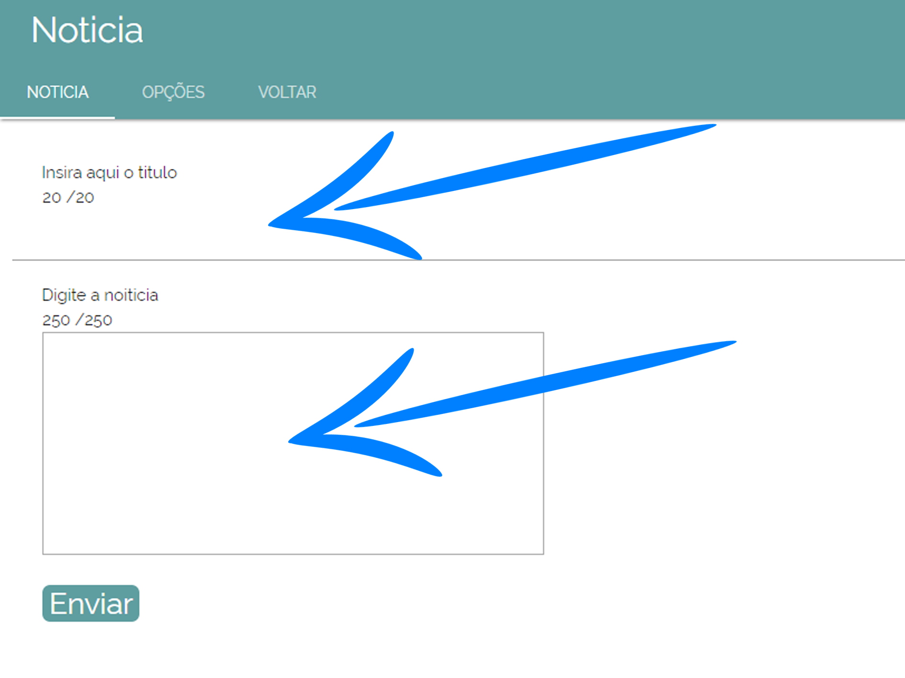
2 - Como modificar uma noticia :
2.1 No cabeçalho da página, clique na opção "Opções".
2.2 Ao clicar irá abrir uma página em que terá todas as noticias que já foram postadas, contendo o nome e o texto das noticias.
2.3 Ao lado de cada noticia há duas opções, escolha a de modificar "representada por um lápis".
2.4 Ao clicar irá abrir um página contendo as informações já da noticia solicitada.
2.5 Repita o mesmo processo feito em enviar noticias.
2.6 Ao terminar clique em "Enviar".
2.7 Para sair, clique em "Voltar".
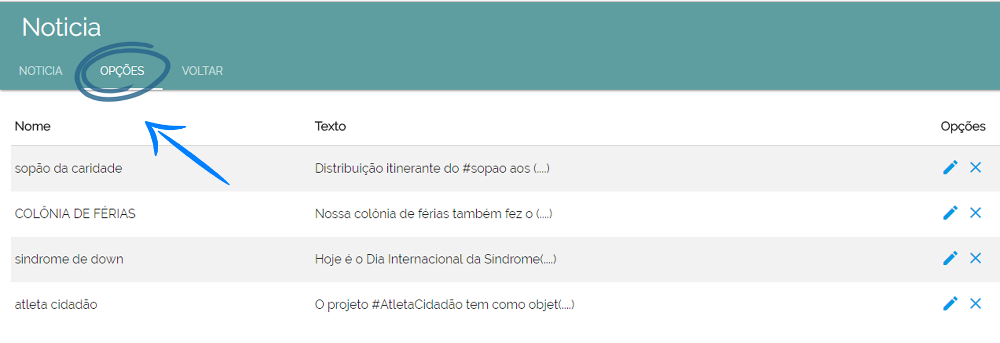
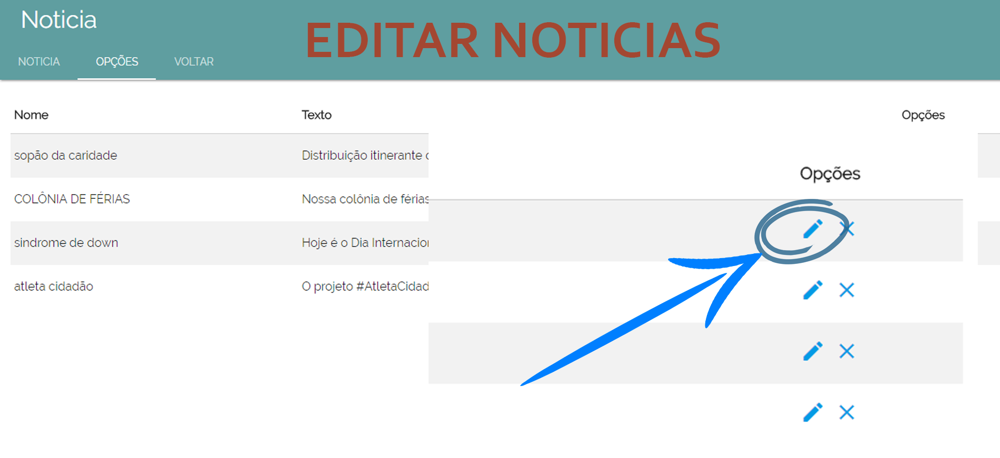
3 - Como excluir uma noticia :
3.1 Repita o mesmo processo feito em modificar noticias.
3.2 Clique em excluir "representado por um x".
3.3 Para sair, clique em "Voltar".
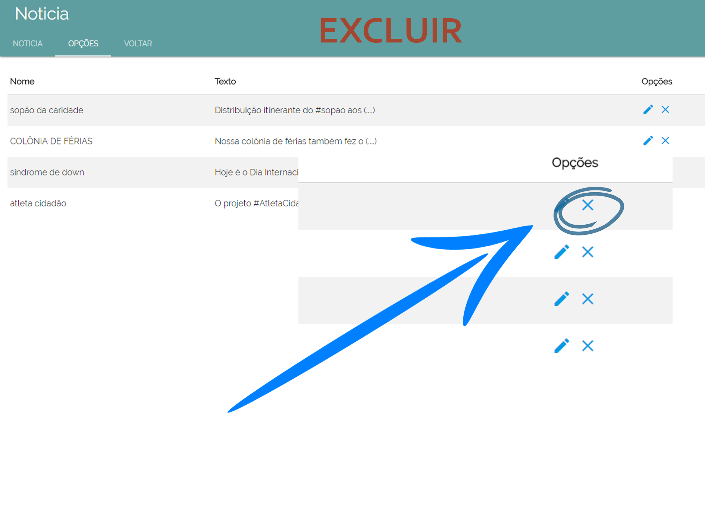
4 - Como adcionar uma ação :
4.1 Na página principal, no cabeçalho da página, clique em ações.
4.2 Na primeira opção, você insere o titulo da ações.
4.3 Na segunda opção, você escreve sobre a ações.
4.4 Para enviar e postar no site, basta clicar em "Enviar".
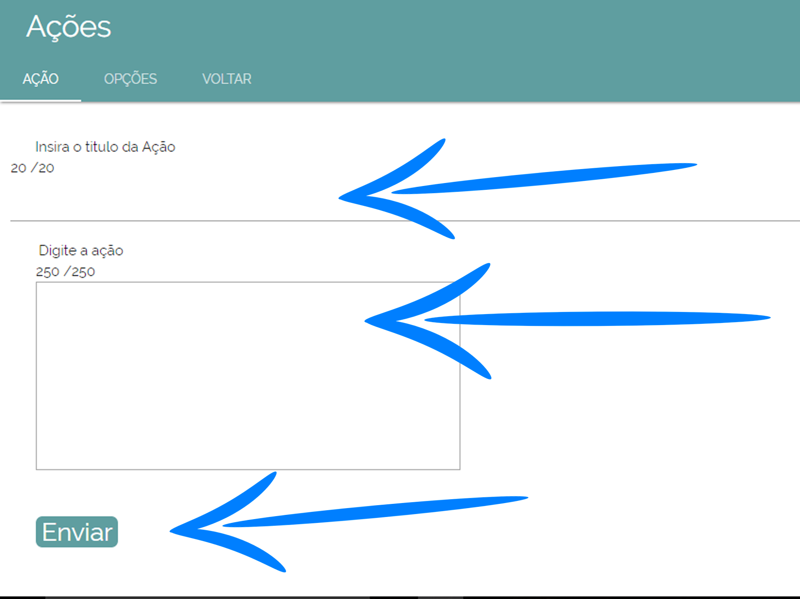
5 - Como modificar uma ação :
5.1 No cabeçalho da página, clique na opção "Opções".
5.2 Ao clicar irá abrir uma página em que terá todas as noticias que já foram postadas, contendo o nome e o texto das ações.
5.3 Ao lado de cada noticia há duas opções, escolha a de modificar "representada por um lápis".
5.4 Ao clicar irá abrir um página contendo as informações já da acão solicitada.
5.5 Repita o mesmo processo feito em enviar ações.
5.6 Ao terminar clique em "Enviar".
5.7 Para sair, clique em "Voltar".
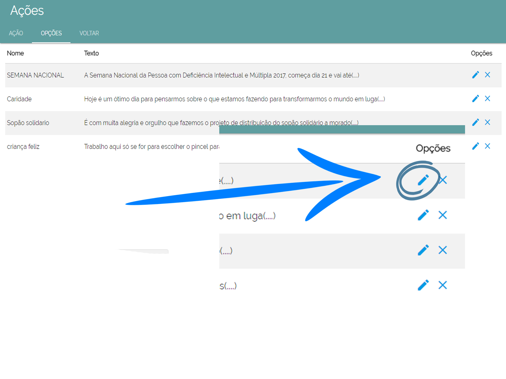
6 - Como excluir uma ação :
6.1 Repita o mesmo processo feito em modificar ações.
6.2 Clique em excluir "representado por um x".
6.3 Para sair, clique em "Voltar".
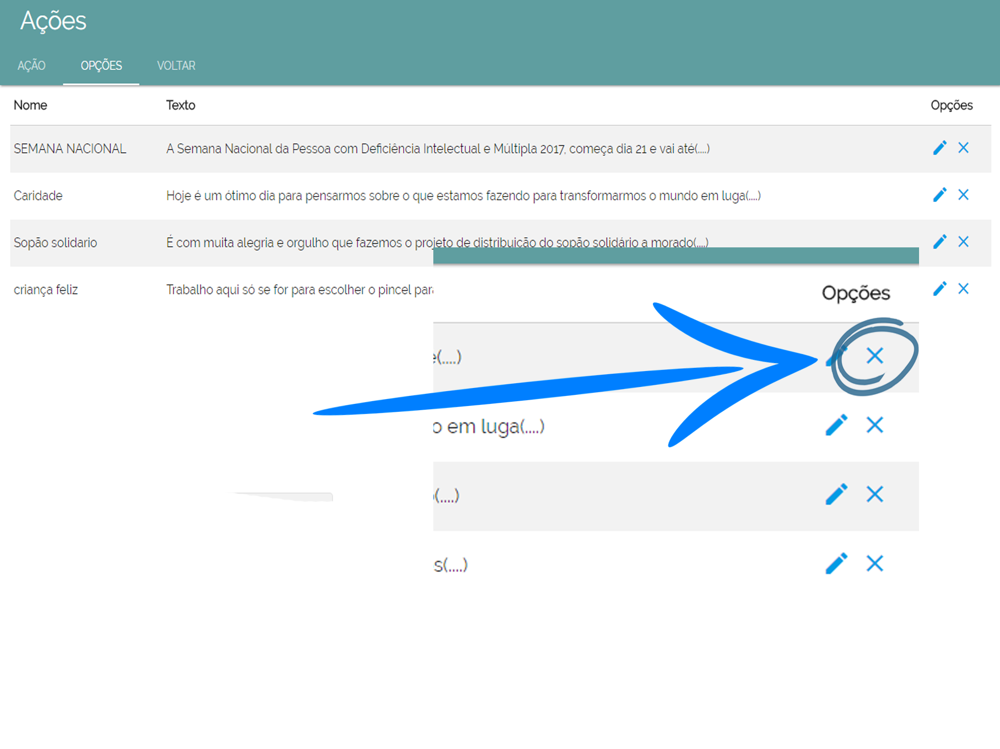
7 - Como adcionar uma foto :
7.1 Na página principal, no cabeçalho da página, clique em fotos.
7.2 Na primeira opção, você clica em "Procurar arquivo". Ao clicar irá abrir uma página na qual você irá escolher a foto desejada
7.3 Digite o titulo o texto da foto e clique em "Enviar".
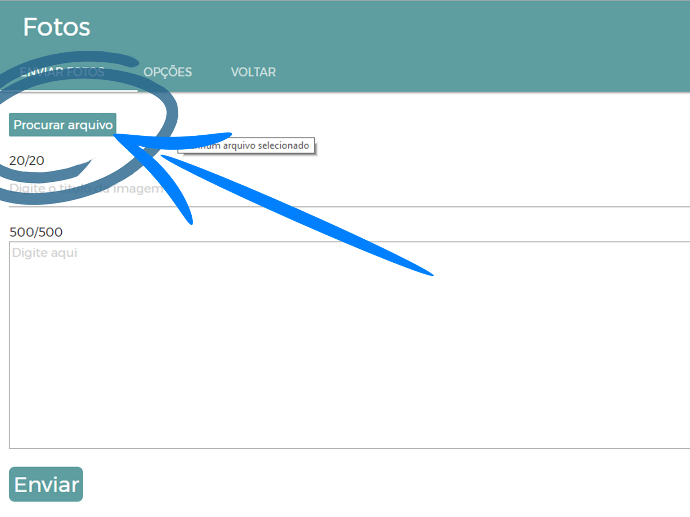
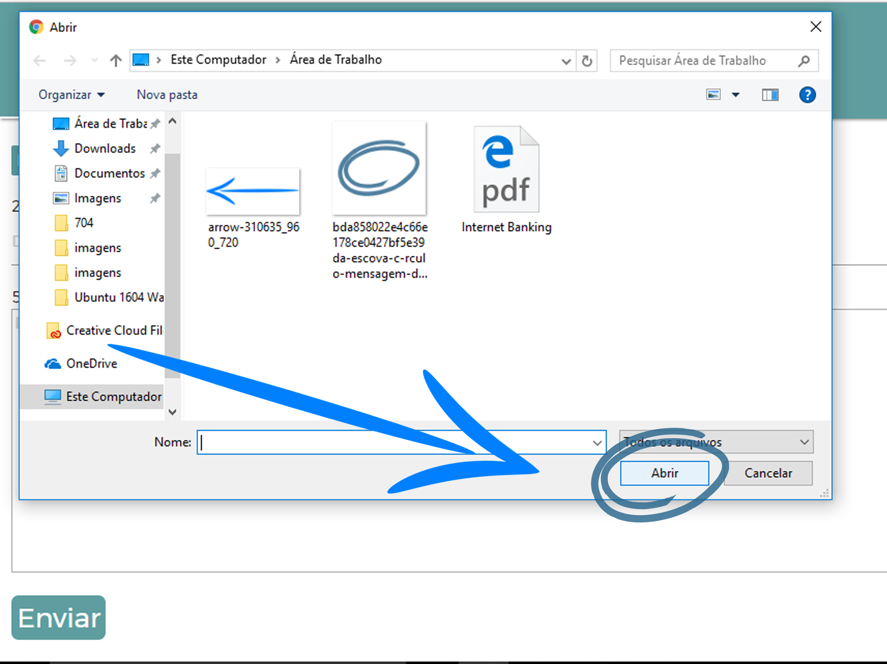
8 - Como excluir uma foto :
8.1 No cabeçalho da página, clique na opção "Opções".
8.2 Ao clicar irá abrir uma página em que terá todas as fotos que já foram postadas, contendo o nome e o texto das fotos.
8.3 Ao lado de cada noticia há uma opção de excluir que está "representada por um X".
8.4 Ao clicar no "x" a foto será automaticamente excluída.
8.5 Ao clicar em "Voltar", você será redirecionada para a página principal.
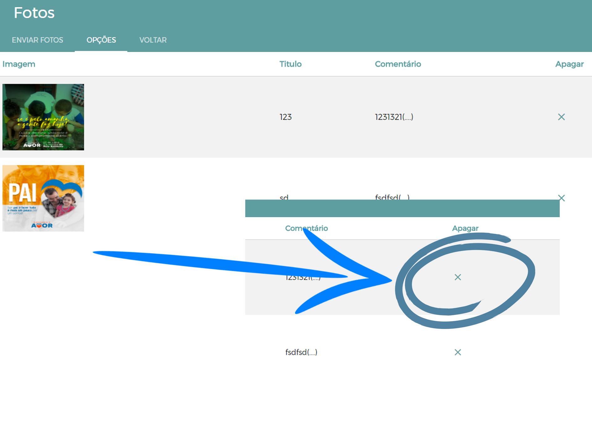
8 - Como adcionar uma foto slide do cabeçalho de seu site :
8.1 Na página principal, no cabeçalho da página, clique em fotos slide.
8.2 Na primeira opção, você clica em "Procurar arquivo". Ao clicar irá abrir uma página na qual você irá escolher a foto desejada
8.3 Digite o titulo da foto e clique em "Enviar".
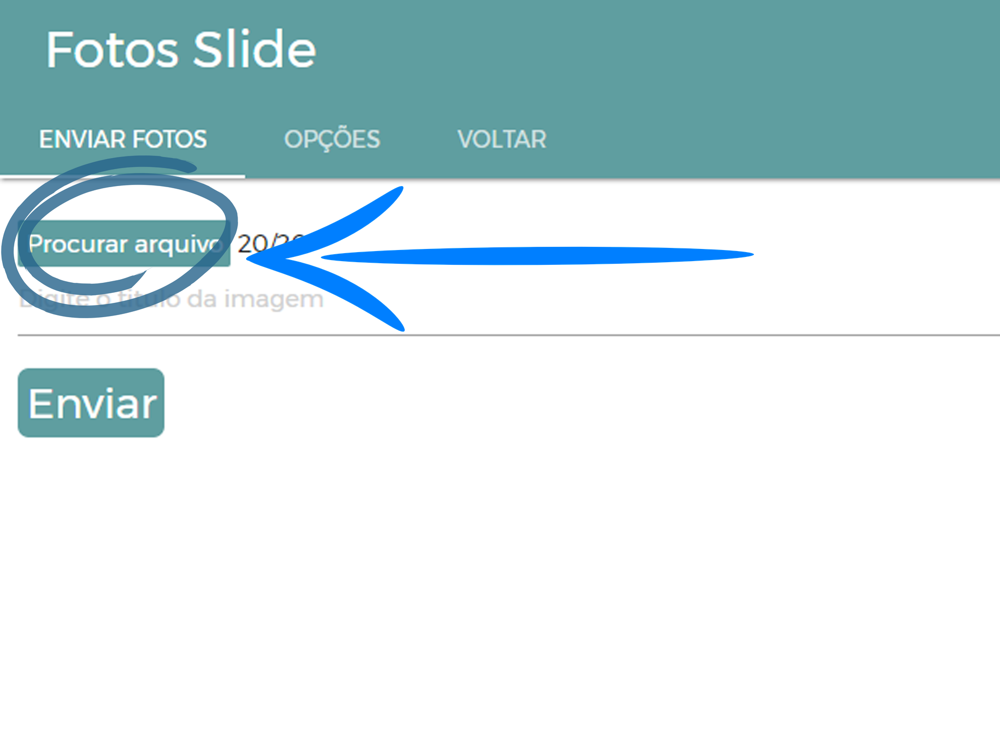
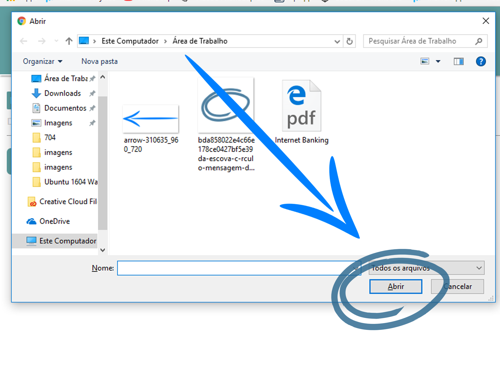
9 - Como excluir uma foto slide :
9.1 No cabeçalho da página, clique na opção "Opções".
9.2 Ao clicar irá abrir uma página em que terá todas as fotos que já foram postadas, contendo os nomes das fotos.
9.3 Ao lado de cada noticia há uma opção de excluir que está "representada por um X".
9.4 Ao clicar no "x" a foto será automaticamente excluída.
9.5 Ao clicar em "Voltar", você será redirecionada para a página principal.
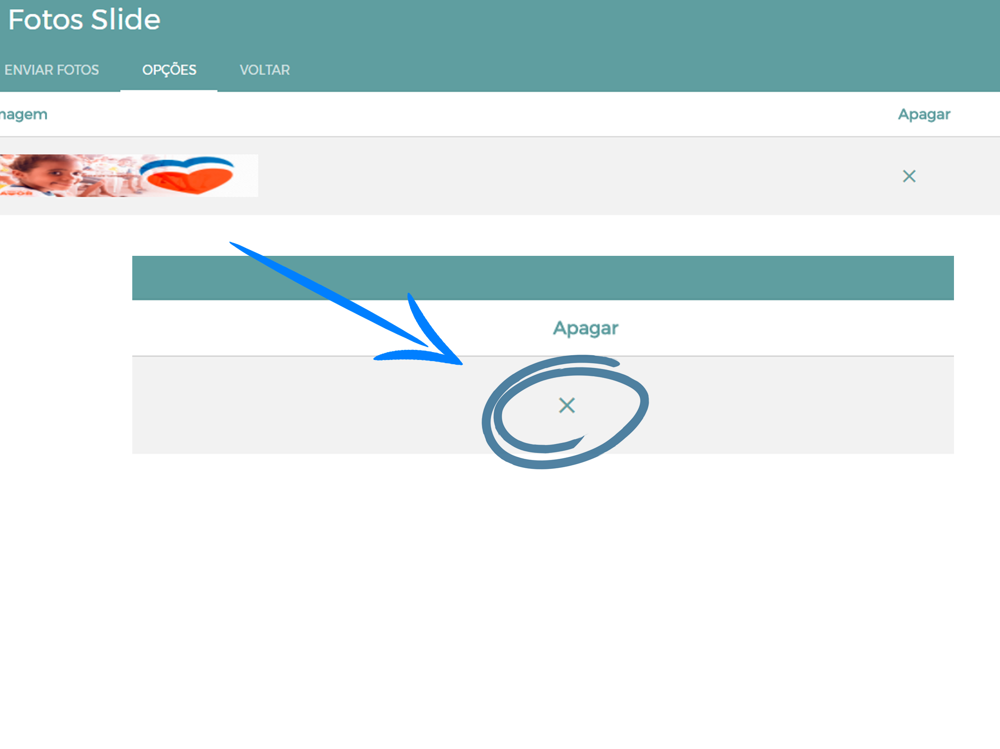